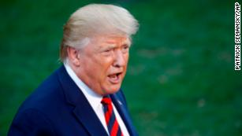
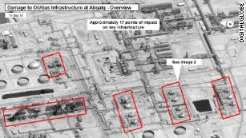

Trump: US 'locked and loaded depending on verification' of attack on Saudi oil field


Washington (CNN)President Donald Trump on Sunday evening tweeted that the US has "reason to believe that we know" who is responsible for an attack on a Saudi Arabian oil field and the country is "locked and loaded depending on verification" following the crippling strike.
"Saudi Arabia oil supply was attacked. There is reason to believe that we know the culprit, are locked and loaded depending on verification, but are waiting to hear from the Kingdom as to who they believe was the cause of this attack, and under what terms we would proceed!" Trump said.
Trump's tweet, which appeared to raise the specter of a US military response, served to ratchet up tensions in a region already on edge after Saturday's audacious attack on the Saudi oil field.
Trump used similar language in June when he announced he had called off an attack on Iran just as the US was "cocked & loaded" to strike because he decided it would cause too many deaths for a proportionate response to Tehran's downing of a US drone.
On Saturday, coordinated strikes on key Saudi Arabian oil facilities -- among the world's largest energy production centers -- disrupted 5% of the daily global oil supply.
Yemen's Houthi rebels took responsibility for the attacks, but they are often backed by Iran.
Though Trump did not name Iran in his tweet, the attack has caused another spike in tensions between the US and Tehran. Prior to Saturday there were signs the US appeared open to new negotiations and even a potential meeting later this month between Trump and Iranian President Hassan Rouhani.
A day after Secretary of State Mike Pompeo blamed Iran for the attack on Saudi oil facilities and argued there is "no evidence the attacks came from Yemen," a senior administration official briefed CNN on information to back up Pompeo's claims. Pompeo did not provide evidence, but the official pointed to satellite imagery provided to CNN showing the oil facilities were struck from the northwest, suggesting an attack from Iraq or Iran, among other information.
On Saturday, Iranian foreign ministry spokesman, Seyyed Abbas Mousavi, rejected the accusation that Iran was behind the attack.
"Such blind accusations and inappropriate comments in a diplomatic context are incomprehensible and meaningless," he said, adding, "even hostility needs a certain degree of credibility and reasonable frameworks, US officials have also violated these basic principles."
Iran's foreign minister took to Twitter to issue a similar denial.
"Having failed at "max pressure", @SecPompeo's turning to "max deceit," Javad Zarif wrote. "US & its clients are stuck in Yemen because of illusion that weapon superiority will lead to military victory. Blaming Iran won't end disaster. Accepting our April '15 proposal to end war & begin talks may."
Trump tweeted later Sunday that it is "incorrect" to say he is "willing to meet with Iran, 'No Condition,'" a contradiction of his own administration. Treasury Secretary Steven Mnuchin said Thursday that the President, "has said he would sit down with Rouhani with no conditions."